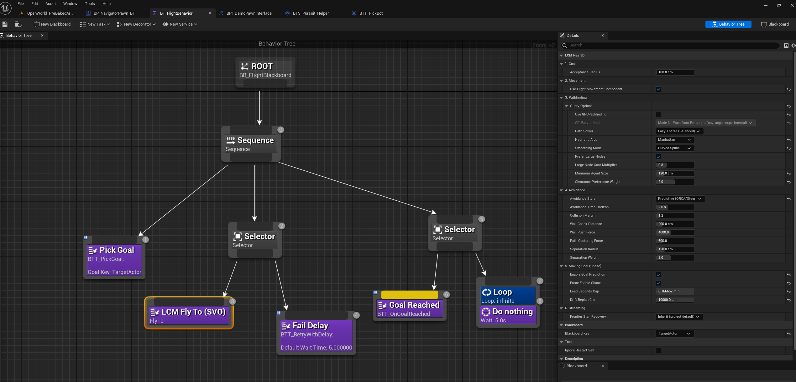
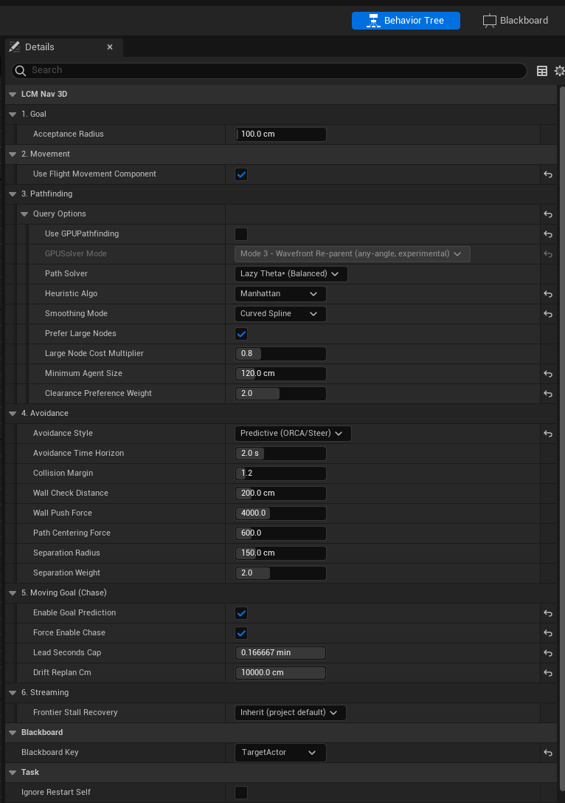

Tutorial 03: Your First Flying Agent
TL;DR: Three ingredients: an
LcmNavigationManagerSVO in the level, a
pawn with an AIController, and a Behavior Tree whose
only task is LCM Fly To (SVO) pointed at a
blackboard key. No C++.
Time: ~20 minutes. You'll end with: a pawn that flies through 3D space to a goal in your own level.
What we're building
Level
├── LcmNavigationManagerSVO ← the brain (one per level)
├── BP_MyFlyer (Pawn) ← the body
│ └── AIController: BP_MyFlyerAI
│ └── runs BT_MyFlyer
│ └── Blackboard: BB_MyFlyer (Vector key "GoalLocation")
└── TargetPoint ← where we want it to goStep 1: Add the navigation manager
- In the Place Actors panel, search
LcmNavigationManagerSVO. - Drag one into your level. Position doesn't matter much. It uses its own location as the centre of the navigation volume, so put it roughly in the middle of your playable space.
- Select it and set, in the Details panel:
| Category | Field | Value |
|---|---|---|
| 1. Setup | Infinite World |
unticked (finite, see Tutorial 02) |
| 1. Setup | Auto Build On Play |
ticked |
| 2. Voxels | World Extent |
large enough to cover your play space (default 10000 = 200 m cube) |
| 2. Voxels | Min Voxel Size |
100 to start |
| 2. Voxels | Clearance Padding |
100 to start |
World Extentmeasures outward from the actor, so 10000 gives you a 200 m cube centred on the manager. If your agents will fly outside that box, increase it: outside the volume there is no navigation data and paths will fail.
See what it built
Tick 5. Debug → Draw Debug Volumes and
press Play. You'll see the octree drawn over your level: lots of big
boxes in open air, small ones packed around geometry. This is
the single most useful thing you can do while tuning. If a
doorway you care about shows no small voxels, the pathfinder can't see
it either.
Turn it back off when you're done; it's expensive to draw.
Step 2: Make the pawn
You need something that can move in 3D without gravity.
- Content Browser → Add → Blueprint Class → Pawn.
Name it
BP_MyFlyer. - Open it and add a Floating Pawn Movement component. (Add Component → search "Floating Pawn Movement".) This is what makes it fly rather than fall.
- Select
FloatingPawnMovementand set Max Speed to 600. Match this to the task'sFlight Speedlater. - Add a Static Mesh component so you can see it. A cone or sphere is fine. Scale it down to something sensible.
- In Class Defaults, set
Auto Possess AItoPlaced in World or Spawned.
Collision tip. For your first test, set the mesh's collision to No Collision. Physics fighting the navigation is a very common source of "my agent jitters / gets stuck", and you want a clean first result. Add collision back once flying works.
Step 3: Blackboard and Behavior Tree
The blackboard
- Add → Artificial Intelligence → Blackboard. Name it
BB_MyFlyer. - Add one key:
- Type:
Vector, Name:GoalLocation
- Type:
The Fly To task also accepts an Object key holding an Actor. Use a Vector for now; the Actor form is what you'd use for chasing, covered at the end.
The behavior tree
- Add → Artificial Intelligence → Behavior Tree. Name
it
BT_MyFlyer. - Open it, and in the Details panel set Blackboard
Asset to
BB_MyFlyer. - Drag from ROOT and add a Sequence.
- Drag from the Sequence and add the task named
Fly To; it appears in the tree asLCM Fly To (SVO). - Select that task and set:
| Field | Value |
|---|---|
| Blackboard Key | GoalLocation |
| Acceptance Radius | 100 |
| Flight Speed | 600 |
Leave everything else at defaults for now.

Figure 03.1 - Where LCM Fly To (SVO)
sits. This is the shipped BT_FlightBehavior demo,
one step past what you have just built: the same Fly To
task, with a goal picker in front of it and a retry-with-delay branch
beside it so a failed plan does not kill the tree. Yours needs only the
highlighted node to start flying.
The FlyTo settings, in full
You will not need most of these on day one, but it is worth knowing the shape of the surface before you go looking for a specific knob.

Figure 03.2 - The LCM Fly To task, all six
sections. Read it as a pipeline: 1 Goal is
where you are going, 2 Movement is what flies you
there, 3 Pathfinding is how the route is computed,
4 Avoidance is how you get past other agents and walls,
5 Moving Goal is only for chasing something that moves,
and 6 Streaming matters only in an infinite world.
Two fields decide the shape of everything below them:
Use Flight Movement Component- ticked, the whole of section 2 collapses, because the movement component owns speed and dynamics instead of the task.Avoidance Style- set toCBS, the seven tuning fields under it hide; CBS is a planner-level solver and does not use them.
Sections you have not configured are not silently active. The panel hides any property the current configuration will ignore, so what you can see is what will run.
Step 4: The AI Controller
Add → Blueprint Class → AIController. Name it
BP_MyFlyerAI.Open it. On the Event BeginPlay node:
- Add Run Behavior Tree, set BTAsset
to
BT_MyFlyer.
- Add Run Behavior Tree, set BTAsset
to
We need to put a goal in the blackboard. Still on BeginPlay, after Run Behavior Tree:
- Add Get Blackboard → Set Value as Vector.
- Key Name:
GoalLocation - Value: for a first test, drag in a Get
Actor Of Class node with Actor Class =
TargetPoint, then GetActorLocation from it.
BeginPlay ─→ Run Behavior Tree (BT_MyFlyer) └→ Set Value as Vector (Key: GoalLocation, Value: GetActorOfClass(TargetPoint).GetActorLocation)Compile and save.
Go back to
BP_MyFlyer→ Class Defaults → set AI Controller Class toBP_MyFlyerAI.
Step 5: Fly
- Drag a TargetPoint into your level, somewhere your flyer has to climb or route around geometry to reach. Put it up high: that's the whole point.
- Drag
BP_MyFlyerinto the level, somewhere with open air around it. - Press Play.
Your pawn should take off and fly to the target point, routing around geometry in full 3D.
If it doesn't move
Work down this list in order. These are the actual causes, in the order they occur.
| Symptom | Cause | Fix |
|---|---|---|
| Output Log: "No SVO Manager found in the level!" | No manager actor | Step 1 |
| Nothing happens, no log errors | AI never possessed the pawn | Auto Possess AI = Placed in World or Spawned,
and AI Controller Class is set |
| Task fails instantly | Goal is outside the navigation volume | Increase World Extent, or move the target inside
it |
| Task fails instantly | Goal (or start) is inside geometry | Move them into open air |
| Agent flies but ignores walls | Draw Debug Volumes shows no detail | Min Voxel Size too large |
| Agent refuses an obvious doorway | Opening sealed by padding | Lower Clearance Padding (see Tutorial
02 §5) |
| Agent jitters or sticks | Physics fighting navigation | Set mesh collision to No Collision for the test |
Full list: Troubleshooting.
Step 6: Make it look good
Defaults are functional, not beautiful. Two changes transform the motion:
On the LCM Fly To (SVO) task:
| Field | Try | Effect |
|---|---|---|
Flight Style |
Physics (Drones/Ships) | Momentum and inertia instead of instant direction changes. (This is already the default.) |
Flight Style |
Linear (Biological/Magic) | Instant, weightless. Good for spirits, insects, magic |
Banking Amount |
4.0 |
Rolls into turns like an aircraft |
Max Banking Angle |
45 |
How far it's allowed to roll |
Deceleration Distance |
800 |
Starts slowing this far out instead of stopping dead |
Max Acceleration |
2000 |
Lower = heavier, more sluggish feel |
Path shape: a raw path is blocky. In Tutorial 02 we met the smoothing modes; Curved Spline is what makes flight look natural rather than like a series of ruler lines.
Step 7: Several agents at once
Duplicate BP_MyFlyer a few times and press Play. They'll
fly the same route and crowd each other. Two settings fix that, both on
the Fly To task:
| Field | Default | Purpose |
|---|---|---|
Separation Radius |
150 |
How close before they push apart |
Separation Weight |
2.0 |
How hard they push |
And Avoidance Style:
| Style | Behaviour |
|---|---|
| None (Ghost/Ignore) | They fly through each other |
| Reactive (Boids/Push) | Push apart on contact: cheap, and the default |
| Predictive (ORCA/Steer) | Anticipate and steer around before colliding: smoother, costlier |
| Context-Based Steering (SVO) | Geometry-aware steering |
For a handful of agents, Reactive is fine. For dozens sharing a corridor, Predictive looks markedly better.
Past a few hundred agents, stop adding pawns and move to Tutorial 06: Mass Entity.
Step 8: Chasing a moving target
To chase something instead of flying to a fixed point:
- Change the blackboard key
GoalLocationto type Object, with Base Class =Actor. - Set it to the actor you want chased.
- On the Fly To task, tick
Enable Goal Prediction.
With prediction on, the agent aims where the target will be
rather than where it is, so it intercepts instead of trailing.
Lead Seconds Cap (default 2.0) limits how far
ahead it will extrapolate, and Drift Replan Cm (default
400) controls how far the target must move before the path
is recomputed.
Recap
- One manager, finite world, sensible
World Extent. - Pawn + Floating Pawn Movement + Auto Possess AI.
- Blackboard key →
LCM Fly To (SVO)→ done. Draw Debug Volumesis your best debugging tool.- Tune feel with
Flight Style, banking and deceleration; tune crowds with avoidance and separation.
Next: Tutorial 04: The Same Agent in StateTree, or jump to Tutorial 05: Dynamic Obstacles to make the world move.